THE STORY OF ARIS KIM
ARIS
KIM
아 리 스 김
색소폰 하나로 예술의전당을 정복하고
카네기홀 무대에 선 남자의 이야기
SCROLL
THE STORY OF ARIS KIM
아 리 스 김
색소폰 하나로 예술의전당을 정복하고
카네기홀 무대에 선 남자의 이야기
장르가 없는 게 아니라,
장르가 아리스김인 거다.
ARIS KIM · 아리스 김
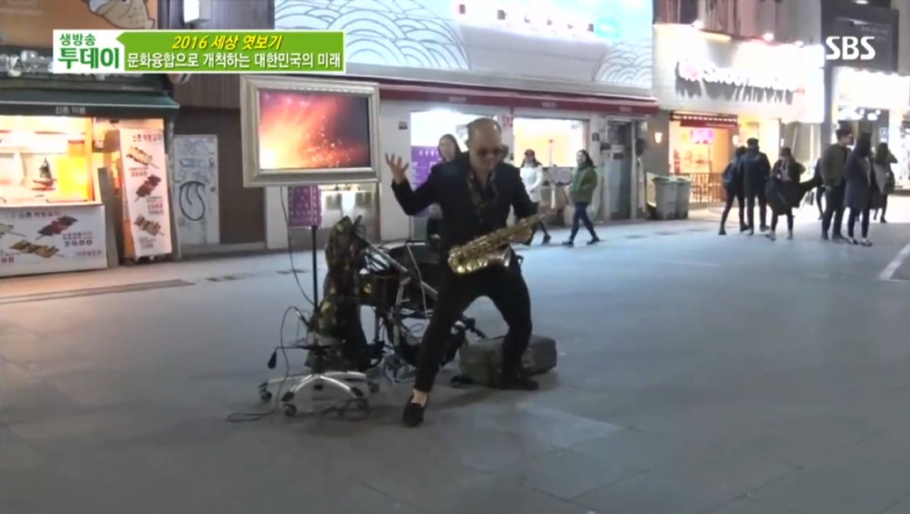
서른셋. 남들은 안정을 찾을 나이에 그는 색소폰 하나 들고 거리로 나갔다.
예술의전당 앞 계단, 허가도 없고 조명도 없었다.
행인들은 흘깃 보고 지나쳤다. 경비원은 날마다 쫓아냈다.
그래도 그는 돌아왔다. 3년 동안, 매주.
"계단 앞 광장이 최고의 무대였다.
세상이 나를 인정하지 않아도
나는 이미 무대 위에 있었다."
2013년. 예술의전당 설립 후 25년 만에 처음으로
거리 공연을 공식 허락한 아티스트가 되었다.
— 매일경제 보도
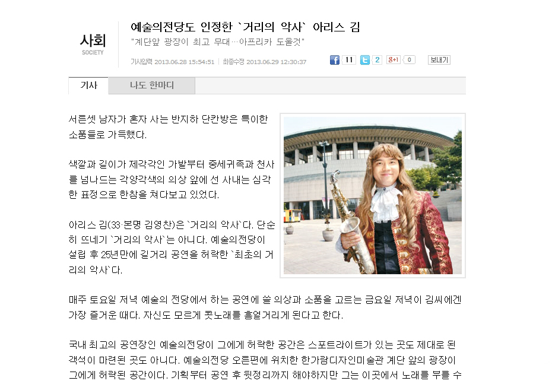
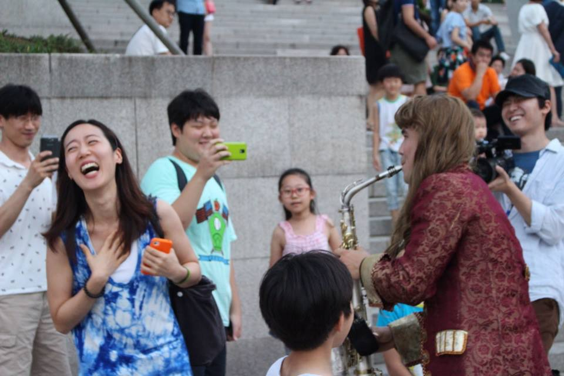
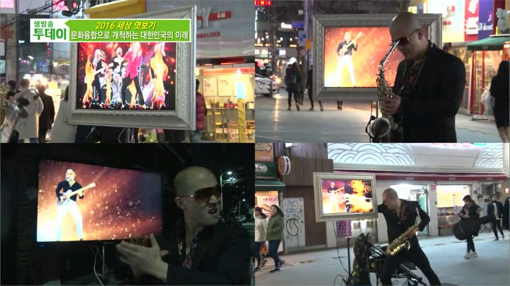
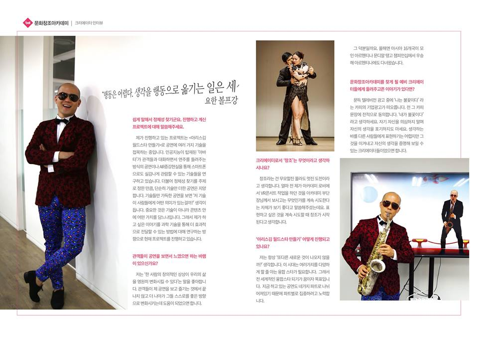
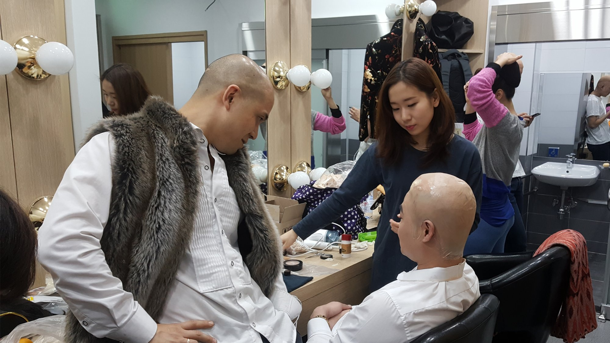
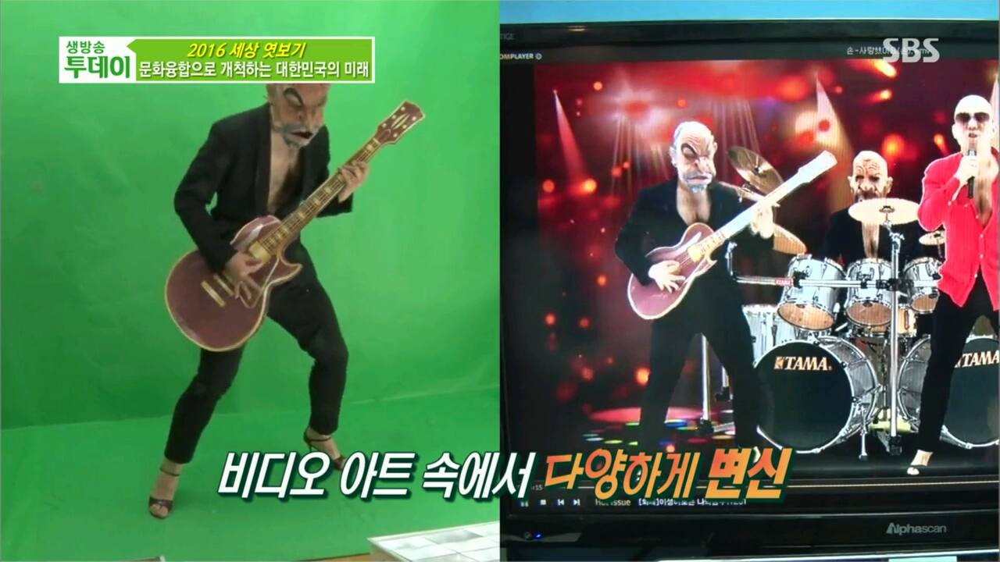
"색소폰만으로는 부족하다." 그는 한국콘텐츠진흥원 문화창조아카데미의 문을 두드렸다. 평균 나이 35세, 45명의 크리에이터 중 한 명. 연 최대 600만 원의 연구지원금을 받으며 AI·AR·비디오아트 기술을 처음부터 배웠다.
"행동은 어렵다.
생각을 행동으로 옮기는 일은
세상에서 제일 용감한 일이다."
SBS 생방송 투데이가 주목했다. "문화융합으로 개척하는 대한민국의 미래" — TV 속 가상 밴드와 하나가 되는 미디어아트 퍼포먼스는 그렇게 탄생했다.
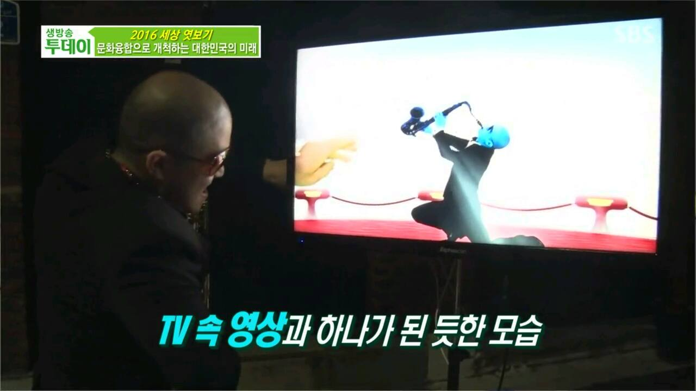
색소폰. 탱고. 카운터테너. 미디어아트. AI 퍼포먼스. 이 모든 것이 하나의 무대 위에서 펼쳐진다. 혼자 서서 가상의 밴드원들과 공연하고, LED 의상으로 빛을 입고, 세그웨이 위에서 연주한다. 아리스김은 장르를 만들었다.
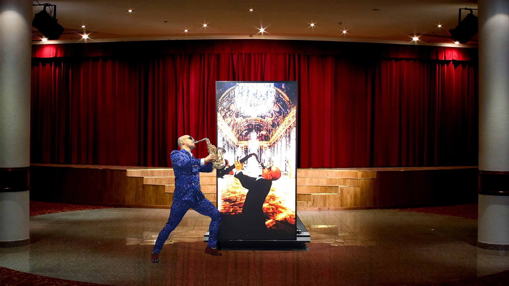
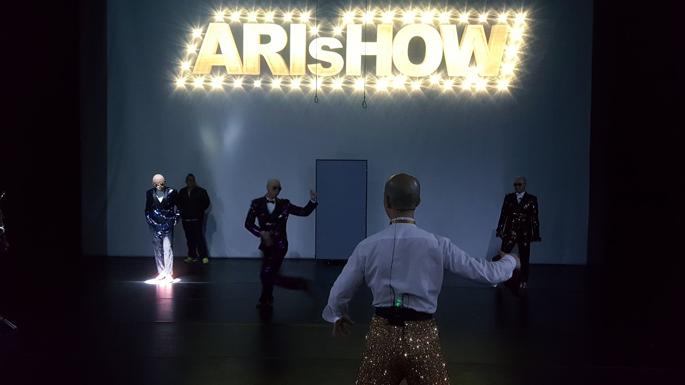
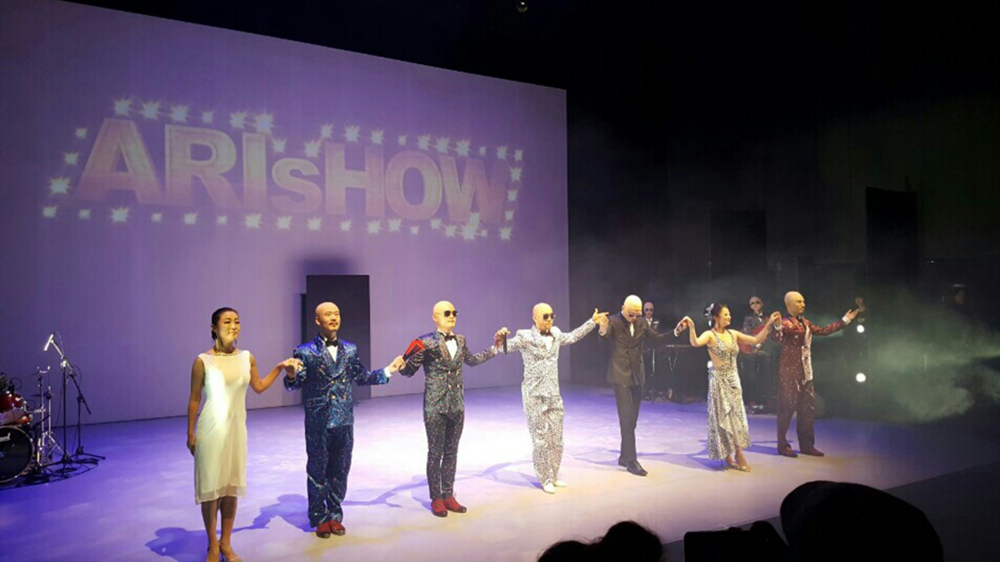
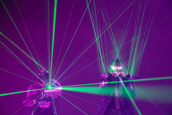
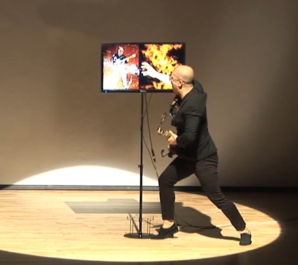
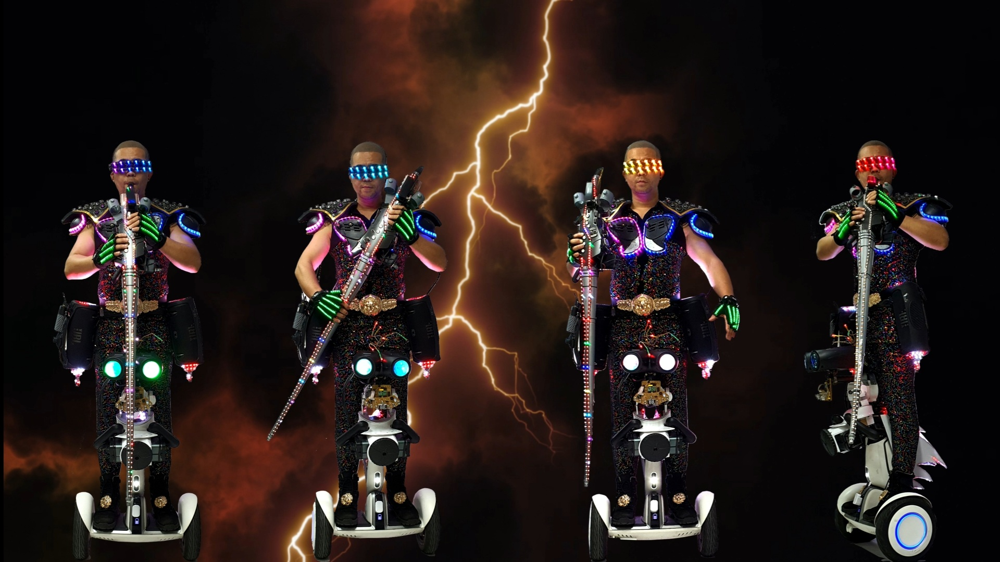

아리스김이 개발한 뉴럴탱고(Neural Tango)는 인간의 신체 접촉을 통해 옥시토신을 분비하고
AI 시대에 인간만이 가질 수 있는 '스킨 데이터'를 연결하는 교육 철학이다.
2016 아시아 탱고 챔피언십 에세나리오 부문 우승. 바탱고(솔로탱고) 특허 창시.
마린 탱고 고등학교 설립. ARIS Method / Neural Tango —
AI가 결코 대체할 수 없는 야생의 감각.

(예미사 — 예술에 미친사연)


색소폰이 소리라면, 그림은 침묵 속의 언어다. 아리스김은 무대 밖에서 붓을 들었다. 장르를 넘나드는 철학이 캔버스 위에 펼쳐진다.